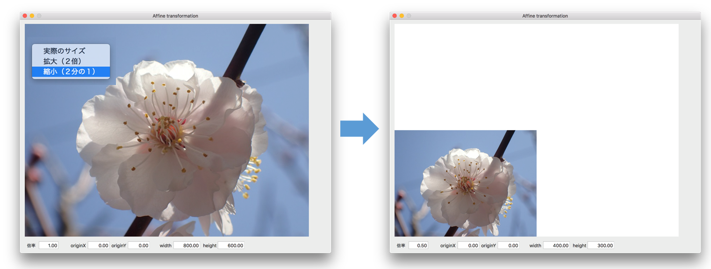
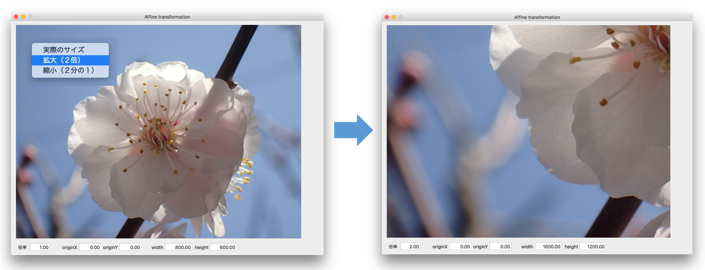
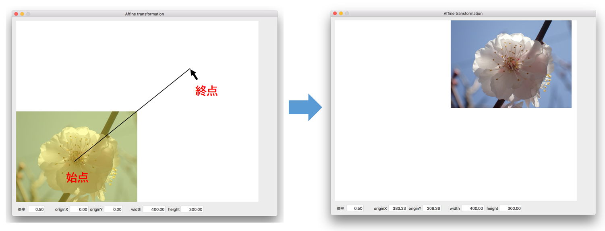
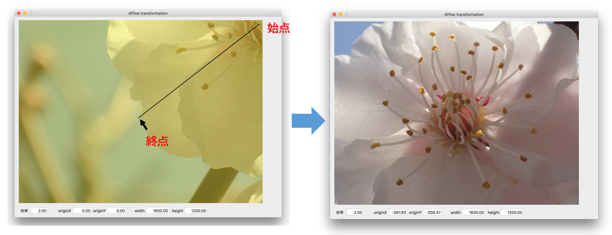
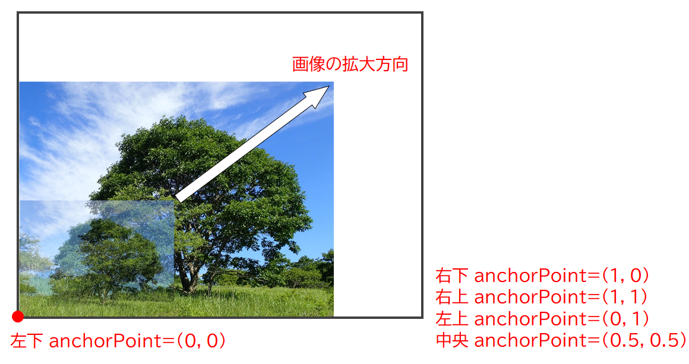
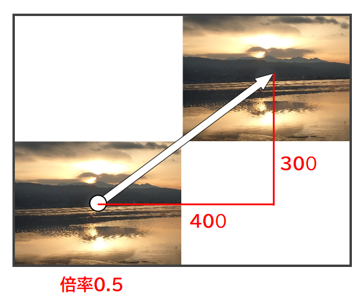
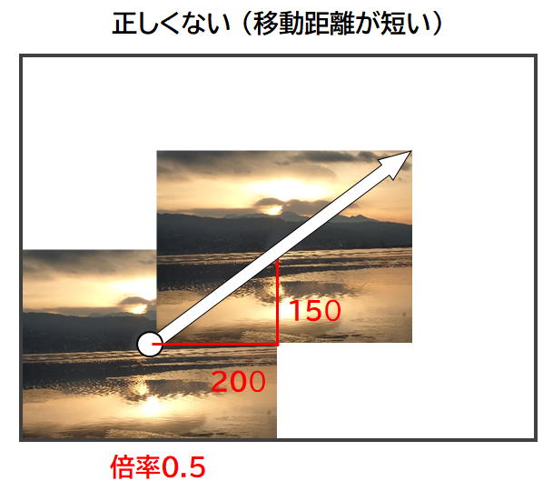

表示イメージの拡大/縮小/移動 〜アフィン変換〜
画像を1/2に縮小する
画像を2倍に拡大する
縮小した画像を右上に移動する
拡大した画像を左下に移動する

初期状態で、イメージファイルから読み込まれた 800x600ピクセルの画像が表示される。
画像の拡大/縮小
ビューの右クリックでコンテキストメニューが表示される。2倍の拡大、または、1/2の縮小を行うことができる。画像の原点は、ビューの左下とする。
画像上で、マウスホイールを回転させる。向こうに回転すれば画像を拡大、手前に回転すれば縮小することができる。
画像の移動
画像をマウスでクリックし選択状態にし、ドラッグによりでカーソルをビューの任意の位置まで移動させる。移動の軌跡は直線として表示される。マウスを離すとそこに画像が移動する。
実装方法
画像はCALayerオブジェクトに描画し、親ビューに追加する方法をとる。800x600ピクセルの画像を同じサイズのビューに表示することを想定。
NSImageオブジェクトのサイズは、オブジェクトをNSImageRep型に変換し、プロパティ pixelsWide/pixelsHigh で求める。
画像の拡大/縮小の起点は、CALayerクラスの anchorPointプロパティで変更することができる。本アプリケーションでは左下を起点とした。（デフォルトは中央）

!!注意!!
anchorPointの設定は、frameプロパティの設定の「前」に行わないといけない。後で行うと表示画像の位置がずれる。
本処理では、画像の左下の原点がビューの中央に来てしまう。理由は不明。使い方に間違いがあるのか？
画像の拡大/縮小、移動は、CALayerクラスのアフィン変換機能を使用する。オリジナル画像に、アフィン変換をかけることによって、変換後の画像が得られる。
アフィン変換の操作には、変換の種類ごとに関数が用意されている。関数の引数には変換量を指定する。戻り値の CATransform3D変数を CAlayerオブジェクトの transformプロパティにセットする。
画像の拡大/縮小
引数に拡大/縮小の倍率を X, Y, Z軸ごとに指定する。
画像の移動
引数に画像を移動する距離（ピクセル数）を X, Y, Z軸ごとに指定する。
変換後の画像はあくまで一時的に表示するだけであり、オリジナル画像の内容が変わることはない。
画像の拡大/縮小と移動を同時に行う !!実装上の注意点!!
次の例では、1/2のサイズの画像（倍率0.5）を、ドラッグで指定した方向（ x方向400ピクセル、y方向300ピクセル）に移動する。

この変換を行うには、オリジナル画像に対して、倍率0.5でサイズを変更するscaling変換と、指定方向に画像を移動するtranlation変換を同時に行う必要がある。これは、CATransform3DConcat関数によって複数の変換処理を連結（concatinate）することで可能となる。このとき注意するのは、連結の順番を次のようにすることである。
1. scaling変換（拡大/縮小）
2. tranlation変換（移動）
これを逆にすると、縮小は正しく行われるが、移動の距離が 指定の半分になってしまう。（x方向200ピクセル、y方向150ピクセル）

どのようなアルゴリズムでこうなってしまうのか、よくわからない。似たような状況に出くわしたら、試行錯誤してみるしかないと思う。
サブレイヤーの階層化
画像を移動するときに、マウスをドラッグしている間、画像と同じ大きさの黄色の半透明な矩形を画像の上に重ねることで、画像をハイライトさせている。
これは、親画像のレイヤーに半透明の矩形を子レイヤーとして追加することで実現している。子レイヤーのframeプロパティは、親画像のframeプロパティを参照しているので、親画像の位置やサイズが変わったとき、
連動して子レイヤーにも反映される。
マウスのホイールの回転イベント
次のメソッドをオーバーライドする。向こう側に回転する正の数、手前側に回転すると負の数が得られる。本アプリケーショんでは、回転数に従って表示倍率の増減を行っている。
ソースコード
カスタムビュークラス
UAView